今年も乾燥機は偉大です [梅吉]
雨がちなお天気が続きますね。
お洗濯物も乾きが悪いしお布団も干せない。
お洗濯物には扇風機の風を当て、お布団には布団乾燥機！
使い始めるとさっそく梅吉さんもご使用です。
ちなみに去年のこの時期も布団乾燥機の虜になってました。
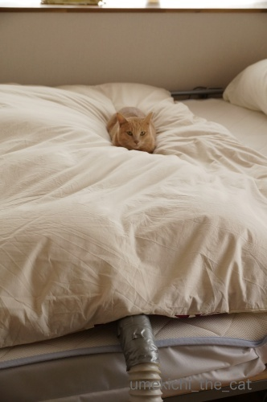
![[猫]](https://blog.ss-blog.jp/_images_e/101.gif) なんや〜
なんや〜
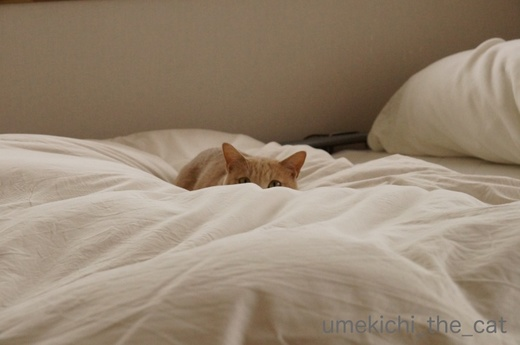
お布団に埋まってますね＾＾
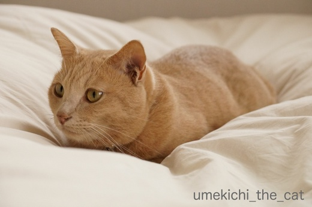
ここはぬくいんやで
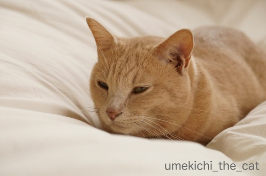
すわっとるとな
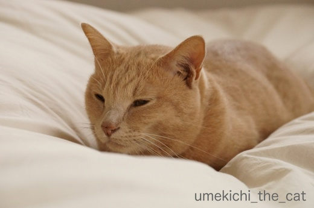
ええかんじになるんや・・・・・
はいはい＾＾ごゆっりどうぞー。
秋ってこんな雨続きでしたっけ？
秋晴れの空は何日前に見ただろう・・・・・
 ↑ガブッと一押し↑
↑ガブッと一押し↑
スマホを機種変してiTunesにバックアップしてあったデータの復元作業も終わったのですが
メールのアカウント設定が上手く引き継がれていません。
5s→8Plusでは世代がちょっと開いているので無理があったのかなぁ。
（おっとの6Plusからは問題なく出来てました。）
で、メールアカウントを手動で設定しなおしたのですが・・・・・
（PCで使っているプロバイダメールアカウントのメールをiPhoneでも受信できるように設定）
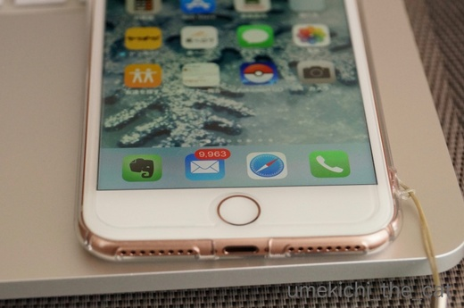
サーバーにあった古いメールを全部受信しちゃいました( ；∀；)
この写真では9963件になっていますがこれでも2000件くらい消したんですよ。
残しておきたいメールもあるので全部チェックしてます。えーん。
この作業が終わるのに何日かかるんだろう。。。。
お洗濯物も乾きが悪いしお布団も干せない。
お洗濯物には扇風機の風を当て、お布団には布団乾燥機！
使い始めるとさっそく梅吉さんもご使用です。
ちなみに去年のこの時期も布団乾燥機の虜になってました。
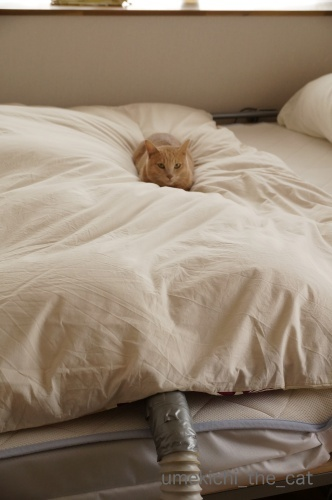
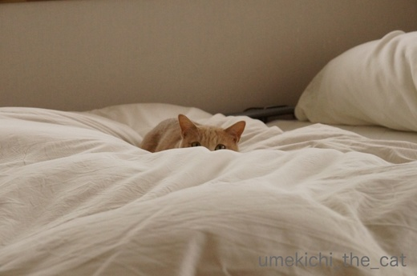
お布団に埋まってますね＾＾
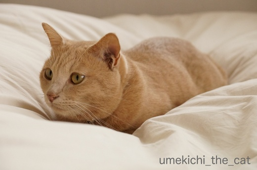
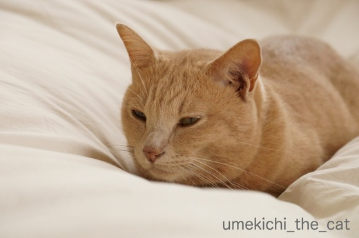
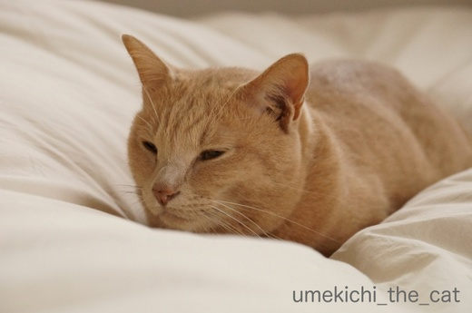
はいはい＾＾ごゆっりどうぞー。
秋ってこんな雨続きでしたっけ？
秋晴れの空は何日前に見ただろう・・・・・
スマホを機種変してiTunesにバックアップしてあったデータの復元作業も終わったのですが
メールのアカウント設定が上手く引き継がれていません。
5s→8Plusでは世代がちょっと開いているので無理があったのかなぁ。
（おっとの6Plusからは問題なく出来てました。）
で、メールアカウントを手動で設定しなおしたのですが・・・・・
（PCで使っているプロバイダメールアカウントのメールをiPhoneでも受信できるように設定）
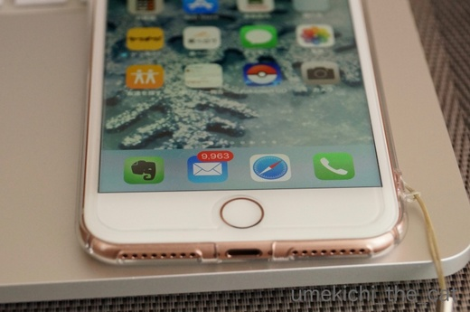
サーバーにあった古いメールを全部受信しちゃいました( ；∀；)
この写真では9963件になっていますがこれでも2000件くらい消したんですよ。
残しておきたいメールもあるので全部チェックしてます。えーん。
この作業が終わるのに何日かかるんだろう。。。。

カフェオレ色の梅吉

梅吉 2023年8月10日 永眠


梅吉と出会った譲渡会

犬猫の理由なき殺処分ゼロ
妄想広告
UMEKICHI 光

爆発的に早い！
時々攻撃的！
Thanks to Mr.Boss365
爆発的に早い！
時々攻撃的！
Thanks to Mr.Boss365

メール1万て実はちぃさん人気アイドルだったの!? サーバーには端末で削除してても溜まったままなの? メカ音痴にはよーわからん。
今日も寒いのでうちでは最大4匹の猫団子が見られます。メンバーは入れ替わってもそれ以上の数にならないのは、場所が狭い為と思われます。布団乾燥中は2・3匹に乗られちゃうと、隅々まで乾かせなくて困ります。
by zombiekong (2017-10-20 16:38)
布団乾燥機中の布団、これはもう至福の場所ですよねぇ(^O^)
でも梅吉さんだからこそ許されるんですよぉ＾＾
もし、私が同じ事をすると速攻かみさんに睨まれます^^;
by ニッキー (2017-10-20 16:39)
秋晴れを見ることなく冬に・・・
って感じがします(T_T)
憧れの布団乾燥機！！
思うように布団が干せずに困っております。
梅吉さん！ぬくぬくですねぇ～(*^_^*)
by きぃ (2017-10-20 17:11)
先生、気持ち良さそう〜〜^ ^
by KENT0mg (2017-10-20 17:29)
布団乾燥機。これはネコ様たちにはたまりませんね。梅吉さん幸せそうです(*^^*)
by palpal (2017-10-20 20:25)
ふわふわのお布団の上で目を細める梅吉さん、
とても気持ちよさそうですね。^^)
それにしても、すごいメールの数ですね！(・O・;）
by yes_hama (2017-10-20 21:55)
最大何件まで表示されるのかなぁ？？
そのままにして確かめるとか…(≧∀≦)
梅吉くん、だんだん目が細くなる〜^ ^ふふ
王子は上をぱふぱふ歩いて遊びますが、ねんねはないなぁ…。暖かそうなのに。
by も〜 (2017-10-20 22:08)
梅吉さん布団乾燥機の暖かさで気持ち良さそうですね！
寒くなったので暖を取っていますね(^^)
by ma2ma2 (2017-10-20 22:08)
梅吉さん気持ちよさそう♪
ウチのは最初興味津々で覗きに来た時に、ぶわ～と風が来たのに驚いて垂直に飛び上がって以来近づいてきません(^▽^;)
あったかくて気持ちいいのにね～。
メール1万件！
読んだらさっさと削除しちゃう方なのでびっくりです！！
by ゆきち (2017-10-20 22:26)
乾燥機これから重宝してますね。梅吉さんは虜ですね
by みぃにゃん (2017-10-20 22:35)
布団乾燥機、ココ数日使ってます＾＾
うちの猫にも大人気でした。
そろそろだよね、まだ？ってベッド脇で待ってました＾＾
携帯では経験ありませんが～パソコンでしばらくメールを受け取らなかった後に、大変なことになったことがあります。
分類が無効になってて、まとめてどわっと数千入ってて。なんかちょうどジャンクメールに目をつけられていたらしく。
最近はそういうわけじゃないのですが、そう言えば最近削除してない‥！？と思い当たり、今日２千ほど削除しました。
by sana (2017-10-21 00:02)
我が家には布団乾燥機は無いのですが
それでも私の羽毛布団はニャンコのベッドになってます＾＾；
by ぽちの輔 (2017-10-21 06:00)
ひゃあ♡ 梅吉さん、至福の表情がシブいわ〜♡
ここんとこ、寒かったしねー。私も隣でぬくぬくしたい(^.^)
by のらん (2017-10-21 10:43)
むふ～ほかほかお布団の海でウットリ・・・こっちまでシアワセな気持ちになってくる～♪(*´ｪ`*)ﾎﾟｯ
by Ginger (2017-10-21 11:30)
乾燥機でフワフワの布団はたまりません。
埋まってますねー(笑)
by 響 (2017-10-21 12:28)
寒い日は乾燥機に掛けておくと寝る時にも温かいんだよね。
梅吉くんもとろとろとろけそう(#^^#)
私もとろとろしたいよ～。夕飯食べたらしよｗ
by emi (2017-10-21 15:49)
猫はすぐに快適な場所を発見しますね。
最高でしょうね(^^)
by kou (2017-10-21 19:36)
梅吉さん、気持ち良さそう～＾＾
うちにも昔、布団乾燥機あったんだけど
あれー？どこにいったんだろー？
ふかふかで気持ち良さそうなので、私もやりたくなりました( ´艸｀)
by マーヤ (2017-10-22 00:56)
布団乾燥機、人気ですよね^^
こう雨も続いて寒いと猫にも人間にも
ありがたいです。
by ryang (2017-10-22 01:14)
梅吉君、とっても気持ちよさそうだねー
ぬくぬく。想像するだけでわたしも眠たくなってくるよ(笑)
未読メールの数、吹き出しちゃった^^;
これは大変な作業だーーー！
ふぁ・・・ふぁいと！
by リュカ (2017-10-22 21:11)
布団乾燥機！
我が家の先代も大好きで、よく乗っかられていました^^;
（つぶさないでーー！）
気持ち良いのでしょうね。
梅吉くんの表情をみれば、退かせられませんね^^;
by Ja-Kou66 (2017-10-22 22:58)
zombiekongnさん＞スマホではデータを見ているだけなので
端末上の削除しか出来ないのです。
でもー、PCで既読済みのメールばかりなんですよね。
それがなぜか未読で古〜いメールまで全部受信・・・
私も詳しいことはよー解らんのです^^;
猫団子やっぱり全員参加は難しいのですね。
布団乾燥機、梅吉だけでも空気が行き渡らないと思っていたのですが
２、３匹では大変です (^▽^;)
ニッキーさん＞それはゴッドマザー様じゃなくても睨みますわよw
やってみたい気持ちはとぉってもよく解りますが (^▽^;)
きぃさん＞秋晴れを見ることなく・・・ああ、それは悲しすぎます！
布団乾燥機良いですよ〜。
本格的に寒くなったら時間を調節して
寝る頃にお布団をほんわか温まった状態にすることも可能です。
電気毛布が苦手な私には大助かりです！
きぃさんも是非♪
KENT0mgさん＞やってみたいって思っていませんか〜？
ダメですよ、ダメですよ〜(*>艸<)
palpalさん＞湯たんぽと並んで猫を虜にするものだと思っています(^_－)☆
暖かい空気がお布団に行き渡らないんだけど梅吉が幸せならそれで良いわ〜w
yes_hamaさん＞湯たんぽやパネルヒーターは「ここがあったかいよ！」と
誘導してあげたので覚えたと思うのですが
布団乾燥機があったかいなんて教えた覚えはなんですけどねー。
にゃんこには温度感知センサーが付いているのでしょうか^^;
メールは本当にorz・・・・
も〜さん＞上には上がいるもので
おっとのスマホは 19000件ってなってましたΣ(ﾟ◇ﾟ；)
持っているメルアド全部見られる様にしているんですって。
PC上で既読済みだからスマホではチェックする気もない様で
バッジの表示数は増え続ける一方・・・(⌒_⌒;
最大表示件数はこちらで観察いたしますww
ma2ma2さん＞猫は暖かいところを探すのが本当に上手だなーって思います＾＾
ゆきちさん＞お、こてつくんらしいエピソードで・・・(*>艸<)
メールはPCで全部既読で削除もしているのですが
ゾンビの様に復活してスマホに蘇ってきました (⌒_⌒;
マウスならサクサク消していけるのですが
おばちゃんのスマホの指操作だとなかなかはかどりませんww
みぃにゃんさん＞布団乾燥機は梅雨時期とこれからの冬、大活躍です＾＾
使い込んでいるのでホースが切れちゃっているのですが
ガムテープでぐるぐる巻きにして使っていますw
sanaさん＞布団乾燥機待ち！？それはかわいいw
梅吉はパネルヒーターの暖かさを覚えたので
オフしていると恨めしそうな顔をする様になりました^^;
2000件削除、マウスを使っても格好面倒な事ですよねー。
私もぼちぼちと指操作がんばります・・・・・
ぽちの輔さん＞ふかふか具合がたまらん！なのでしょうね〜＾＾
ぽちの輔さんのお布団というのも人気の理由でしょう(^_－)☆
のらんさん＞シブいだなんて♡
目をつぶってもだだ漏れるええ男っぷり・・・
梅吉って罪なオトコだわぁ(*>艸<)
梅吉の隣、いつでもどうぞー＾＾
ただし、ガブガブされますよ(顔）w
Gingerさん＞見ているだけでほっこり、な光景でした＾＾
でも暖かい空気をブロックしているのです・・・wwwww
響さん＞あたたかい、ふわふわ、密着率が高い・・・
お猫様大好き三大要素が詰まっとるとですw
emiさん＞そうそう！
本格的に寒くなると乾燥機で温まったお布団は天国ですよね＾＾
私は乾燥機と足元湯たんぽ＋梅吉で真冬を乗り切りますよ！！
夏は暑さでとろとろ（どろどろかしら）になっちゃいますが
この時期はあったまってとろとろするのが嬉しいですよね〜。
kouさん＞どうして暖かい場所がわかるのでしょうね〜。
夏場は涼しい場所にいるし。不思議〜w
マーヤさん＞マーヤさん宅には四次元への入り口があるのかも・・・(*>艸<)
時間を調節してセットすると夜寝る頃にふかふか＆ぬくぬくのベッドが
出来てますよ＾＾
寒い冬、足が冷たくなる私には布団乾燥機と湯たんぽが欠かせません！
ryangさん＞布団乾燥機、
今年の様な長雨の秋にはありがたい文明の利器ですね＾＾
でもやっぱりお日様の下にお布団を干したいな・・・
リュカさん＞ねこが眠っているだけでも眠気を誘うのに
暖かさプラスですからねー＾＾ぬくぬく。。
メールの削除、PCならマウスでさくさく進みますが
スマホではそうもいかず^^;
指つりそうになってくるから各指20件ずつ交代でやってますw
全指動かすからボケ防止になりそうよw(左手もやってますwww)
Ja-Kou66さん＞梅吉4.5キログラム、空気の通り道を塞ぐには
十分過ぎる重さでございまして・・・^^;
しょうがないやって諦めてますw
梅吉がいなくなったら再度空気を送ったりもしています。
下僕ですから・・・ (^▽^;)
by ちぃ (2017-10-23 19:12)